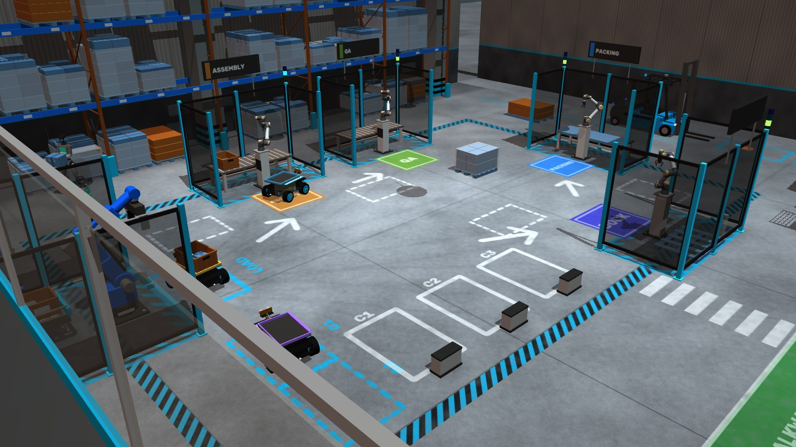

A $50 car and a phone.
airo/protocol.py · car.py · camera.py · eye.py · rig.py
The car is an Elegoo Smart Robot Car V4: an Arduino UNO, four TT motors, skid steer, no encoders, and a BLE
module. Its firmware predates the hackathon and is used unchanged; protocol.py reimplements its byte
layout, and the firmware stops the motors 500 ms after the last command.
An iPhone about 1.8 m above the floor is the only sensor. Four ArUco markers taped at the floor corners define a
metric frame (1 → 2 is +x, 1 → 4 is +y) through a homography, and a fifth marker on the car gives its pose. A
marker taped off the turning centre swings on a circle while the car pivots, so every pivot would look like a
slide: eye.py runs two pivots in place, opposite ways, and fits where the turning centre sits.
rig.py is the 20 Hz loop: it sends commands, reads the latest pose, keeps goals inside a 0.15 m
floor inset, holds still through brief marker blindness (up to 1.5 s) instead of aborting, and logs every tick to
jsonl. On the real car, pivots below about 70 PWM stall and the car breaks away from rest at about 45 PWM, so
commands are kept above both.
Seven numbers describe how this car moves.
airo/body.py
A body maps the two PWM commands to motion. Each side has a gain past a soft dead zone; commands act after a delay and reach the wheels through a first-order lag; the turn rate has an effective track factor and a drift term:
target_side(t) = g_side · p(t − τ) · σ((|p(t − τ)| − dz) / 2) σ = logistic w_side = target_side through a first-order lag (time constant lag) v = (w_L + w_R) / 2 ω = η · (w_R − w_L) / 0.145 m + κ · v ẋ = v cos θ ẏ = v sin θ θ̇ = ω
| Parameter | Meaning | Excited by |
|---|---|---|
g_l, g_r | speed per PWM, each side | any motion |
dz | dead zone: PWM before a wheel moves | a command near the dead zone |
tau | command delay | any motion |
lag | wheel response time constant | any motion |
eta | turn efficiency of the skid-steer (the track width is fixed at 0.145 m) | a turn |
kappa | drift: turn per unit of forward speed | a turn |
The rollout integrates this on a 10 ms grid, warming the wheel state up on the 2.5 s of commands before the window. Inverted, the same model gives the PWM pair for a wanted speed and turn rate, so driving always uses the body the car believes it has.
Least squares on what the camera saw.
airo/body.py: fit
- Residuals: predicted minus measured x and y for every pose sample, plus 0.1 × the heading error in radians, over every probe segment.
- Restarts: delay and lag trade off into local minima, so the fit restarts at τ = 0.05, 0.15 and 0.3 s and keeps the lowest cost.
- Sign search: gradient descent cannot pass a gain through zero, where that side stops responding. After a change the fit also restarts with the left, the right and both gains negated, which is how a reversed motor wire is found.
- Anchor: in a relearn a weak pull toward the previous body keeps parameters the new data says little about (the dead zone after a few pivots) from wandering.
- Bumped probes: a probe whose residual is 4× the others' median and over 2 cm ran into something, and is left out of the learn.
The uncertainty is drawn, not hidden.
airo/body.py: posterior, ensemble, cloud
The posterior is a Laplace approximation around the fitted body with a broad physical prior:
Σ = ( Jᵀ J / s² + diag(1 / prior_sd²) )⁻¹ s² = 14 · τ_corr · RSS / (n − 7)
J is the residual Jacobian. A parameter no probe has excited has its column zeroed and keeps its prior spread: the gains, delay and lag need any motion, the dead zone a command near it, eta and drift a turn. The noise variance is inflated by 14 times the residuals' autocorrelation time τcorr, because the Laplace fit misses each segment's noisy start pose and the curved delay–lag ridge; 14 was calibrated on held-out probes in simulation, where over 30 seeds the true outcome falls within 2σ of the prediction 87–100% of the time.
Bodies drawn from N(best, Σ) and rolled forward over the planned commands are the ghost cloud on the dashboard. After ten probes its radius (the spread after 1.5 s of a gentle arc from rest) is 0.3 cm in the model-exact simulator and 1.1 cm in the MuJoCo twin.
Every half second: did the car go where the cloud said?
airo/body.py: surprise · airo/mission.py
Each 0.5 s window is replayed: every cloud member is rolled from the window's first measured pose over the commands the rig actually ran (so a late tick does not read as a changed body), and the measured displacement is compared with the cloud's:
s_xy = |Δp_measured − mean Δp| / √(var Δp + (1 cm)²) s_θ = |Δθ_measured − mean Δθ| / √(var Δθ + (0.03 rad)²) score = max(s_xy, s_θ)
- Sudden change: the median of the last three windows above 3.0. One spike never triggers.
- Slow change: a capped CUSUM, S ← max(0, S + min(score, 3.0) − 1.8), triggers above 3.0. Clean windows stayed under 1.6 in 40 eval runs on both rigs; a tow on an already loaded car scores about 2.4, under the main threshold but caught here.
- Windows with a pose dropout are skipped, and surprise is suppressed for 2 s after a relearn.
Across 70 simulated runs per rig, bare and loaded, there were no false triggers.
Experiments, chosen to separate hypotheses.
airo/probes.py · airo/scientist.py: learn
The probe library is open-loop: straight steps at several speeds and in reverse, a ramp, pivots both ways at three powers, arcs both ways and a short pulse. Each kind measures something (steps the side gains, drift and delay; the ramp the dead zone; pivots eta; arcs the mixing law; the pulse delay and coast), and each is checked against the free floor before it runs.
A single straight speed cannot tell the gain from the dead zone (any g · (p − dz) through one point fits), so a learn only concludes after a straight probe at or below 60 PWM, one at or above 100 PWM, and a pivot. A full learn is ten probes. Muse Wonder chooses them through tools; without the API a fixed schedule does.
A new body is accepted when a prediction lands.
airo/scientist.py: relearn, run_probe, conclude
- On a surprise the car halts. Muse Spark looks at the car in parallel ("a weight pack strapped on top").
- Remembered bodies whose clouds explain the window since the change (median surprise under 3.0) are offered to
Wonder through a
recalltool; otherwise the body is refitted on that window first. - Wonder gets the tools
run_probeandconclude. Eachrun_proberefits first and records the engine's prediction (mean and sd for forward, sideways and turn) before the wheels move. Wonder must give a plain-language reason and a falsifiable technical hypothesis for every probe; it may only quote numbers the tools returned, and unsafe or unknown probes are rejected. - The relearn is confirmed when a probe in the regime where the surprise happened (straight or turning) lands with |z| < 2 on all three quantities, and the prediction was tight: sd at most 3 cm, 3 cm and 6°. A vague prediction would confirm anything.
- Wonder has 12 s of thinking time per relearn (a turn takes 6–20 s); then a scripted policy finishes with up to five probes (step, pivots both ways, step back). A change no body explains, with |z| above 5, stops the car as a hardware fault.
concludewrites one plain sentence, the technical detail and a short body name into the lab notebook; Muse Image draws a self-portrait for the memory card.
Loaded at the cell: same, recalled, or new?
airo/scientist.py: check_body, _weigh, _choose
When an arm puts a tote on a car (or takes it off), the car does not wait to be surprised. Parked at the cell it runs one pivot in place (a smaller one, or the other way, if the bay leaves less room) and weighs every body it knows:
- A body qualifies only if the pivot lands within |z| < 2 with a tight prediction.
- Qualifying bodies are ranked by Gaussian log-likelihood, which also charges a wide cloud for its spread, so a vague body cannot win.
- The current body is kept unless another is at least 1.0 more likely in log-likelihood (about 2.7×).
- If the best two are within that margin, a second pivot (the other way, if there is room) tells them apart.
- If nothing explains it, the pivot is repeated in case something bumped the car. If the two runs disagree, it keeps its body and lets driving show a change; otherwise the new body is learned at the cell.
This path is scripted throughout, so driving never waits on Wonder. In the factory carry benchmark it named the right body for 41/41 heavy loads, 40/40 light ones and 81/81 unloads in the normal warehouse, with a median check of 2.1 s (3.7 s for a light tote, which sits between the bare and heavy bodies and usually needs the second pivot).
A body learned once is recalled by every robot.
airo/memory.py
The library is one JSON file per robot model. Each entry holds the body, its cloud members, the cause, whether it was verified, which robot learned it, which robots have tested it since, and its self-portrait. Every robot holds a view of the same pool with its own active body; a robot new to the pool starts from the fleet's first confirmed body.
Recall costs one confirming probe: 2.1 s against 3.7 s and two probes for a relearn in the memory benchmark (weight on, off, on again: 10/10 each way on both rigs). In the factory the first heavy tote of a run is learned at the cell in about 12 s; every later one, on any robot, is recalled.
Plain words in, tool calls out.
airo/commander.py · airo/voice.py · airo/fleet.py
Muse Spark reads a typed or spoken command with the robot's pose, the floor and what it knows, and returns the
tool calls that carry it out, in order: go_to, turn, patrol,
push, stop, learn, status, say,
answer_after (for "look around and tell me what you see") and, on the factory, deliver.
"Stop" never waits for a model, and offline a plain parser takes over. Muse Voice Transcribe streams speech over a
realtime WebSocket. The fleet routes "airo 2 …" to one robot and everything else to the selected one.
A grid from SAM, a path, and a pursuit that knows the delay.
airo/planner.py · airo/control.py · airo/fleet.py · airo/floorwatch.py
- Perception: each site maps its station names to SAM concepts, so "deliver to packing" means something on the floor. SAM 3.1 masks are warped through the floor homography into a 2 cm occupancy grid.
- Planning: 8-connected A* with clearance on that grid.
- Control: delay-compensated pure pursuit steers from the pose predicted one delay ahead, with a 0.15 m lookahead and 0.25 m/s top speed; it pivots in place above 60° heading error, drives again below 20°, and slows inside 0.3 m of the goal. PWM comes from the learned body's inverse.
- Fleet: robots plan around each other's footprints, queue for bays, give way to people and the forklift, and plan around dropped pallets and cartons.
- Real floor:
floorwatch.pycompares a top-down floor image with the empty floor as first seen, so something dropped in the car's way makes it wait, then go around with its learned sideways spread as clearance.
A warehouse where a tote's mass really loads the wheels.
airo/world.py · mjsim.py · warehouse.py · loader.py · cobot.py · workers.py · forklift.py · hall.py
- One MuJoCo world holds every car, with a DC-motor model per wheel, wheel stiction that drops once a wheel turns, damping that grows with contact force (so a load slows the car), a 0.17 s command delay, a slight left/right motor mismatch for drift, and the firmware's 500 ms watchdog.
- Totes are free bodies without contacts. The conveyor and arms move them kinematically, and on a car's deck a weld holds them, so a 0.8 kg tote genuinely loads the car it rides.
- Arms load and unload at every bay: our own six-axis arm, or the UR5e with a Robotiq 2F-85 from MuJoCo Menagerie with numerical damped-least-squares IK. Unitree G1 workers walk kinematically; an autonomous forklift shuttles pallets and stops for people. All at 1:4 scale.
- Poses come from ground truth or from the real ArUco pipeline run on rendered frames. Offline, a SAM stand-in segments the rendered overhead view.
- The hall's static parts are merged per material, so the whole building is a few dozen draw calls.

One event loop. Threads only hand data over.
scripts/demo.py · scripts/show.py · airo/server.py
- One event loop per process.
demo.pyruns on a single asyncio loop: the dashboard (uvicorn), the fleet publishing state at 10 Hz, each robot's mission stepping its rig at 20 Hz, the ticker that paces MuJoCo by the wall clock, the 3D view at 24 fps and voice. - Threads only hand data over. On the real car a daemon thread grabs camera frames and tracks the
marker; the loop reads its latest pose. Typed commands come from a daemon stdin thread and microphone audio from
the sound card's callback, both through
loop.call_soon_threadsafe. Body fits run inasyncio.to_thread(numpy only). - There is no render thread. Every MuJoCo renderer (overhead camera, SAM stand-in, 3D view) is
created, used and closed on the event-loop thread; the dashboard's
/camerahandler queues its request for the 3D view loop instead of rendering itself. show.pyseparates by process. The warehouse and the live car are two childdemo.pyprocesses, each with its own loop, GL contexts and BLE link. On Ctrl+C each child gets one SIGTERM so it can close BLE; the process group is killed only after 20 s.
Two rules prevent the crashes: a MuJoCo GL context must be freed on the thread that made it, or it segfaults, so
nothing renders through to_thread or an executor; and threads off the loop are daemons, because
asyncio.run waits for executor threads at exit and one blocked on stdin would keep the process and its
BLE link alive.
What it doesn't do yet.
- The benchmark tables are from simulation. On the real car: with a water bottle on, the old model predicted 0 cm and the car moved 17 cm, and after relearning 7 predictions in a row landed; a warm-motor change was relearned in 27 s; 3.5 min of patrol with a bottle on board raised no false alarm.
- The body model has seven parameters and no term for drag, slip or battery sag. Changes under ~8% speed and the twin's small slippery patch go unnoticed, and in the model-exact simulator a tow on a loaded car stays below the sustained-surprise allowance.
- Drift is weakly identifiable; the learning gate reports its sign as undetermined within 2σ of zero.
- The uncertainty inflation is calibrated in simulation; on hardware only its autocorrelation factor adapts.
- Muse Wonder takes 6–20 s per turn, so live it often gets one turn of its 12 s budget before the scripted policy finishes a relearn; the benchmark uses the scripted scientist for repeatability.
Every constant above, its value, file and line, and whether it was measured, fitted or chosen: docs/tuning.md.